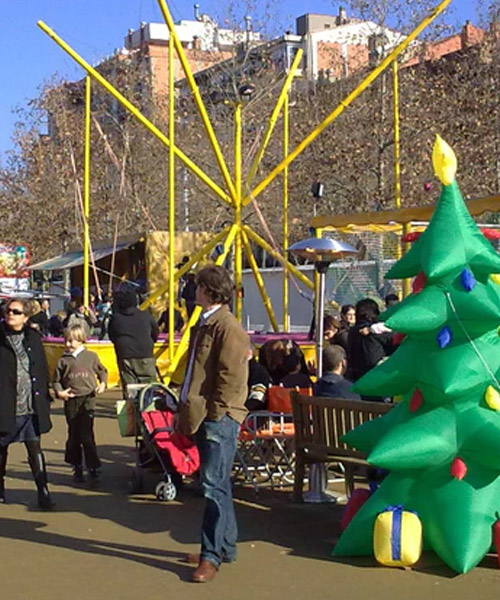

Activitats en família
Per Nadal, els pobles de la provincia de Barcelona s’omplen d'activitats familiars úniques, pensades per fer gaudir i compartir als grans i als petits. En aquest recull de propostes que us oferim podreu trobar des de tallers creatius de pessebres i follets, fins a jocs de pistes i recorreguts inimaginables

Viu un Nadal especial a Catalunya en Miniatura! Una experiència familiar, amb activitats nadalenques, ambientacions especials i les rèpliques més emblemàtiques de Catalunya. Gaudeix d’un recorregut únic per les maquetes amb un toc nadalenc, tallers, música festiva i la visita del Pare Noel.

Als Jardinets de l'Espai Cultura de Sabadell, us espera una pista de patinatge sintètica, totalment ecològica i sostenible. Amb patins d'agulla, gaudireu de l’experiència de lliscar en un entorn únic, envoltats de natura i tranquil·litat.

A la plaça del Dr. Robert, el Calendari d'Advent us convida a seguir cada dia les aventures dels seus personatges. La malvada Bruixa del Carbó intentarà robar les cartes als Reis, però l’esperit nadalenc sempre triomfa. Un espectacle ple d’emoció, diversió i somriures per a tota la família.

Món Sant Benet acull l’“Operació Reis d’Orient”, una activitat familiar que combina un joc de pistes pel monestir per trobar la clau màgica dels Reis d’Orient i un taller per fer neules, el seu dolç preferit. Segons la llegenda, fa més de mil anys, els Reis van confiar aquesta clau a l’abat, però ara ha desaparegut.

Firamagic arriba al Nou Parc Central amb una proposta plena de màgia i diversió per a tota la família. Durant la temporada nadalenca, petits i grans podran gaudir d’activitats, espectacles i moments màgics en un entorn únic. Un espai ideal per viure l’esperit de Nadal amb il·lusió i fantasia.

Converteix materials quotidians en una figura de pessebre única i sostenible! Al taller de figuretes de pessebre, amb taps, rotlles, ampolles i altres materials reciclats, donaràs vida a un personatge de Nadal personalitzat amb la teva imatge. Una activitat creativa i divertida per a nens a partir de 5 anys, acompanyats d’un adult.
Un taller màgic on podràs crear els seus propis follets nadalencs amb llanes de colors i materials reciclats. Aquests divertits personatges seran perfectes per penjar a l’arbre o regalar. Amb l'ajuda d'una col·laboradora del museu, cada infant donarà vida al seu follet! No oblideu portar un tub de paper higiènic buit per reciclar.

Badanadal és un dels parcs de Nadal més complets de Catalunya. Les pistes de gel i el tobogan gegant per baixar amb dònuts són les grans atraccions, però aquest any, el Mercat de Nadal afegeix un toc especial.
Passeja pel bosc i coneix la Fada Garlanda, l’oficina de correu nadalenc, la cuina de les llaminadures, el planetari de les il·lusions i fins i tot la mina de carbó! Un recorregut exterior i circular, on podràs admirar les llums, fer fotos, gaudir de l’oferta gastronòmica i interactuar amb els éssers que habiten al bosc.
El Màgic Pol organitza un campus de màgia al Museu de l'Aigua i el Tèxtil. Una experiència on aprendre trucs per deixar tothom bocabadat aquestes festes. Cada taller és una nova aventura, amb secrets i il·lusions per compartir en família.

Crea un fanalet per rebre els Reis i elements decoratius per fer la seva estada més especial. Tallers de pintura amb vi (sense alcohol) i oli d'oliva per a tota la família o infants. Una activitat creativa per gaudir de Nadal plegats!

Aquest any, el tió de la Culla s'ha perdut i necessita la teva ajuda! Per tornar-lo a casa, caldrà seguir els rastres que ha deixat pel jardí, les tines, la premsa... Amb bona orientació i una llanterna, podràs ajudar-lo a trobar el seu lloc. Un divertit joc de pistes per a tota la família!

Dona vida al Nadal amb paper! Al Taller del Bosc aprendrem a transformar fulls de scrap en precioses boles i estrelles per decorar casa teva. Un espai per deixar volar la creativitat i crear decoració única i plena de màgia nadalenca. Comparteix la teva obra d’art a les xarxes i omple el Nadal d’inspiració!
Prepara la taula per a les festes amb estovalles i tovallons únics! Participa en aquest taller d’estampació on decoraràs peces de cotó amb motius nadalencs. Porta les teves estovalles o tovallons i converteix-los en una peça original per sorprendre els convidats.
Gaudeix d’un matí ple de sabors i diversió amb aquest taller de cuina pensat per a famílies. Aprendràs a preparar receptes nadalenques senzilles i delicioses, ideals per compartir durant les festes. Els més petits podran posar-se el davantal i cuinar en equip.